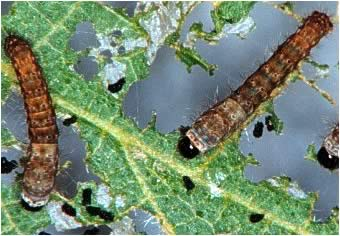
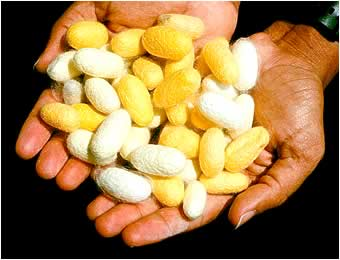
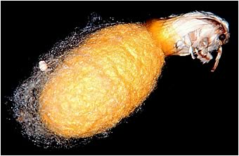

SilkwormsSilkworms only eat fresh mulberry leaves. They can't drink water and get all the moisture they need from the leaves. Newborn silk worms must be placed on the mulberry leaves as they are too weak to crawl from one leaf to another. Mulberry leaves dry out very quickly and need to be replaced regularly. Worms eating mulberry leaves
The silkworms need to eat regularly so they will grow big enough to start spinning their cocoon. This process takes about a month. Before they start spinning their cocoon they attach themselves to a secure surface with glue-like filaments. The silk thread emerges through the worm's lip and is actually hardened saliva. The cocoon spinning process takes about three days. Cocoons can be either white or yellow
It is important not to disturb the worms while they are spinning their cocoon as they will have to start all over again. Once the silkworm spins its cocoon it starts to pupate - it begins to change into a moth. This process takes around a month, and then the moth will emerge from the cocoon. The silkworm gets out of the cocoon by spitting a special liquid onto it. This brown liquid softens the strands of silk and the moth can eat its way out. The moth emerges from the cocoon by spitting a brown liquid on it. This softens the cocoon fibres.
Silkworm farmers need to be careful that they process the cocoons before the moths eat their way out of them. They place them in warm water which kills the moth inside. The warm water also loosens the thread on the cocoon. The silk worker finds the end of the thread and winds it onto a bobbin. The single strand of silk that forms the cocoon can be up to one mile long! |